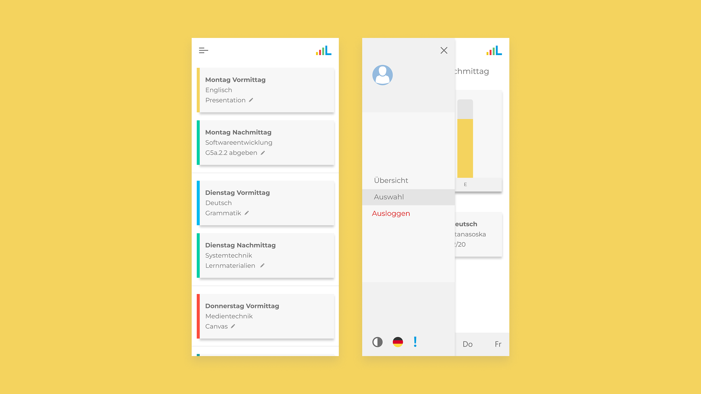

Designing a solution for class registration
Role
UX Designer
Responsibilities
User Research, Feature Ideation, Usability Testing, UI Design
Team
2 Web Developers, Backend Engineer, Project Manager
Timeline
1 year (2019 - 2020)
"My classes are too crowded. Sometimes I don’t even get to enter the classes I need to be in."
Learning Hub: With self-paced and a new education system unique challenges arise
The Learning Hub is a new educational concept at the Higher Department of Information Technology at the TGM, which restructures teacher-centered lessons into student-focused, self-controlled learning. Students can decide for themselves which subjects to attend and can freely adjust their learning speed and depth.
With a new educational system, it’s only natural that fresh and unique challenges will arise. One of these challenges is that some classes fill up faster than others and the teacher has to decide who gets in. A class registration tool would solve this problem and allow for better planning.
This was my first UX project. I was the only designer on the team and also worked on introducing new features.
Designing not only for my classmates, but also myself
Since at the time of the project I was a student of the Department of Information Technology, I was not only designing for my classmates around me, but also for myself. I already had a pretty good intuition about what might be needed to solve this challenge, but I didn’t want to make too many assumptions.
Target demographic:
- Students aged 14-20
- Teachers managing registrations
- Interested in technology
- Initially IT students, with potential expansion to other departments
Encouraging preplanning, improving overcrowding of classrooms and tracking class attendance
After talking to my classmates and teachers, I decided to focus on the following feature set:
- Registration system
- Notes for each registration
- Statistical overview for class occupancy for teachers
My goal was to make the registration process as effortless as possible. The entire week can be planned from the Overview Page in just a few seconds by right-clicking the cards and selecting the desired class.

By selecting the weekday on the sidebar, students can view the graphical view of classes and also swap between morning and afternoon classes.
The mobile web app offers a stacked view and works in a nearly identical way to the desktop site. Students can select the desired classes on the Overview Page by long-pressing instead of right-clicking. On the selection screen, the bottom navigation offers the selection of the day.
Lessons learned
With this being my first UX project, I was able to learn many valuable lessons, and naturally there were many things I will be able to improve on in the future:
- Research available tools more (I used Adobe XD to create all the mockups - a big mistake, although back in the day there weren’t that many alternatives yet)
- Create a design system
- Communicate things more clearly to the developers
- Use a version control system
Retrospective
To conclude, this was one of the most fulfilling projects I have worked on. We were able to iterate very rapidly and try various ideas. In the end the team was able to launch a product that launched successfully with positive user feedback. It significantly reduced classroom overcrowding and allowed students to plan effectively.